Lecture 1: Reliable Notebooks and Debugging First 🚦🐛¶
Welcome back! You already met Python, git/GitHub, Markdown, and VS Code in the prereq course—today we sprint through the essentials, add notebook hygiene, then spend most of the time on defensive programming and debugging so your analyses survive first contact with messy data.
Table of Contents¶
- Quick hits: setup, Markdown/git refresher, notebook hygiene (first 30 minutes)
- Defensive programming for data science (30→60)
- Debugging in VS Code + Jupyter (60→90, closing demo)
- Assignment and resources
Quick hits: setup + hygiene (first ~30 minutes)¶
Demo (~30 min): Accept the course repo via GitHub Classroom + enable GitHub Education perks.
Links: GitHub Education · #FIXME Classroom invite · DS-217 Lecture 01 deep-dive on tooling.
What carries over from the prereq¶
Summary: Quick reminder that Python, git, Markdown, and VS Code basics already exist so we can focus on reliability and debugging. Visual:  Signature:
Signature: python -m venv .venv && source .venv/bin/activate venv = virtual environment (isolated Python packages for this project) Example:
lectures_25/01. - PHI (Protected Health Information): Patient data requiring special security—never commit to public repos or log in plain text. Fast local/cloud workflow¶
Summary: Pick one workflow (local venv or Codespaces) and stick to it for predictable grading and fewer surprises. Visual:  Signature:
Signature: codespace.create(repo, machine="small") Example:
python -m venv .venv && source .venv/bin/activate then pip install -r requirements.txt. (Windows: .venv\Scripts\activate) - pip: Python's package installer (installs libraries listed in requirements.txt) - Cloud: GitHub Codespaces → select the repo → pick a small machine → reuse devcontainer if provided (pre-configured development environment). - Windows users: consider WSL2 for a Linux environment inside Windows—matches Codespaces and avoids path headaches. - VS Code essentials: Python + Jupyter extensions; Command Palette for everything; auto-format on save. - The -m flag runs a module as a script (e.g., python -m venv runs the venv module). Notebook hygiene and reproducibility¶
Summary: Notebooks must be run-all ready, deterministic, and free of stray outputs or secret paths. Visual:
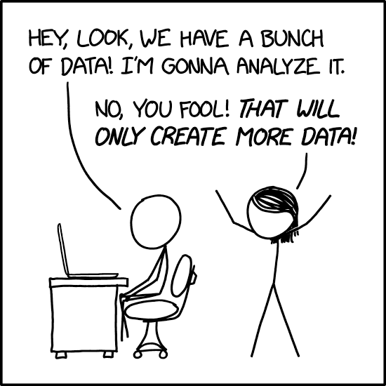
Signature:def run_all(notebook_path: Path) -> None Example: # Clear outputs before commit
jupyter nbconvert --ClearOutputPreprocessor.enabled=True --inplace lecture.ipynb
# TODO if not. - Clear outputs before committing unless the output is the point; keep plots lightweight. - Capture environment: pin deps in requirements.txt, store configs in .env or YAML, never hardcode secrets/paths. - Use relative paths and small sample data for demos; document larger data sources. Git/GitHub/Markdown in 5 minutes¶
Summary: Minimal git/Markdown toolkit for fast, clean commits and readable docs. Visual:
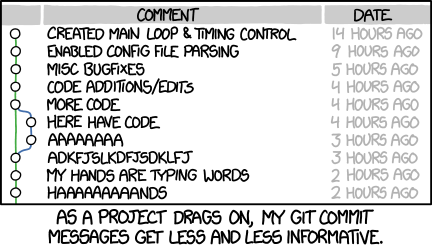
Signature:git commit -m "feat: summary" Example: - Git flow: git status → git add → git commit -m "feat: short message" → git push. - Use GitHub Desktop or VS Code Source Control if the CLI slows you down. - Markdown recap: one # title per doc, headings for structure, fenced code blocks with language tags, link with [text](url). Demo (~30 min): Accept and open the starter repo¶
Summary: Accept Classroom, clone/open, install deps, and prove Run All works before coding. Visual: #FIXME Add screenshot of Classroom acceptance flow (clone or Codespaces). Signature: gh classroom accept <invite-url> Example:
gh repo clone <classroom-repo>
cd <classroom-repo>
python -m venv .venv && source .venv/bin/activate
pip install -r requirements.txt && jupyter nbconvert --execute starter.ipynb
#FIXME link) and enable the GitHub Education pack if not already. - Open the repo locally or in Codespaces; verify .venv or devcontainer activation. - Run pip install -r requirements.txt; open the starter notebook and confirm it runs Run All without edits. Defensive programming for data science (30→60)¶
Demo (~60 min): Hardening a tiny data-cleaning notebook before it breaks.
Links: defensive_programming_notebook.ipynb · logging docs.
Common failure modes in health data projects¶
Summary: How health datasets fail—missing columns, unit drift, stale environments, and silent PHI leaks. Visual:
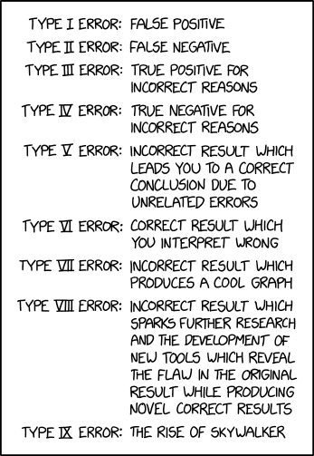
Signature:def assert_expected_columns(df: pd.DataFrame, expected: list[str]) -> None Example: def assert_expected_columns(df, expected):
missing = [c for c in expected if c not in df]
if missing:
raise ValueError(f"Missing columns: {missing}")
Guardrails: DRY/KISS, linters, and configs over hardcoding¶
Summary: Centralize settings and keep helpers tiny so you can reuse them and spot side effects.
Quick definitions: - DRY (Don't Repeat Yourself): Extract repeated code into functions—one place to fix bugs. - KISS (Keep It Simple): Prefer clear, obvious code over clever one-liners. - Pure functions: Functions that always return the same output for the same input and don't modify external state—easier to test and debug. Visual:
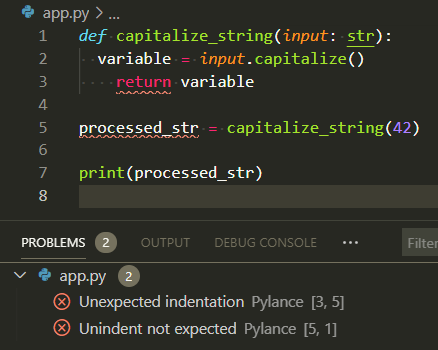
Signature:def load_settings(config_path: Path) -> dict Example: import yaml
from pathlib import Path
def load_settings(config_path: Path) -> dict:
return yaml.safe_load(config_path.read_text()) # YAML: human-readable config format
SETTINGS = load_settings(Path("config.yaml"))
config.yaml or .env) and load them once. - Keep helper functions small and named for intent; avoid clever one-liners that hide side effects. - Validate inputs early: assert expected columns, value ranges, and units (assertions = checks that raise errors if assumptions violated). - Prefer pure functions where possible so tests are easy. - Use a linter (e.g., ruff, flake8): catches typos, unused imports, and style issues before you run the code. VS Code can run linters on save. Exceptions, logging, and safe exits¶
Summary: Raise specific exceptions, log clearly, and fail fast without leaking PHI. Visual:
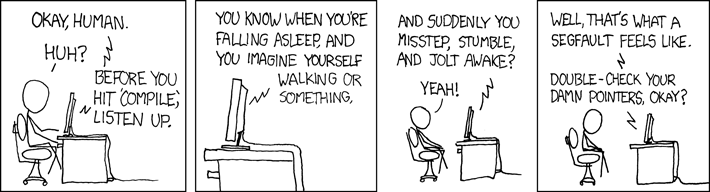
Signature:def load_clean_data(path: str) -> list[dict] Example: import logging
from pathlib import Path
logging.basicConfig(level=logging.INFO, format="%(levelname)s:%(message)s")
def load_clean_data(path: str) -> list[dict]:
csv_path = Path(path)
if not csv_path.exists():
raise FileNotFoundError(f"Missing input: {csv_path}")
logging.info("Reading %s", csv_path)
# TODO: add schema validation
return csv_path.read_text().splitlines()
try:
rows = load_clean_data("data/intake.csv")
except FileNotFoundError as err:
logging.error("Check your path or fetch the sample data: %s", err)
Demo (~60 min): Make the notebook harder to break¶
Summary: Run the cleaning notebook with broken inputs, add schema/bounds checks and logging, rerun to see actionable errors. Visual: Signature: def validate_values(df: pd.DataFrame) -> pd.DataFrame Example:
import pandas as pd
def validate_values(df: pd.DataFrame) -> pd.DataFrame:
bounds = {"weight_kg": (30, 250), "height_cm": (120, 230)}
for col, (lower, upper) in bounds.items():
bad = ~df[col].between(lower, upper)
if bad.any():
raise ValueError(f"{col} out of bounds: {df.loc[bad, ['patient_id', col]]}")
return df
df = pd.read_csv("demo/data/patient_intake_bad_values.csv")
validate_values(df)
Debugging in VS Code + Jupyter (60→90)¶
Demo (~90 min): Step-through debugging in VS Code for scripts and notebooks.
Links: VS Code Python debugging · vscode_debug_sample.py · vscode_debug_walkthrough.md · screenshots below.
Print debugging: start here¶
Summary: Print statements are your first debugging tool—fast, simple, and works everywhere. Visual:
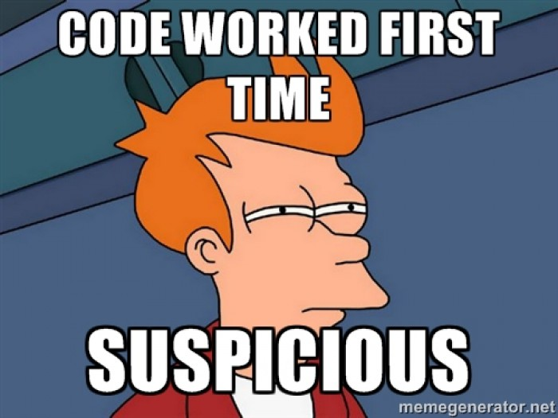
Signature:print(f"{var=}") # Python 3.8+ shows variable name and value Example: def calculate_bmi(weight_kg, height_m):
print(f"{weight_kg=}, {height_m=}") # See inputs
bmi = weight_kg / (height_m ** 2)
print(f"{bmi=}") # See output
return bmi
print() statements at key points: function entry, before/after transforms, inside loops. - Use f-string {var=} syntax (Python 3.8+) to print both name and value: print(f"{df.shape=}"). - For persistent debugging, switch to logging so you can toggle verbosity without removing code. - Remove or comment out prints before committing—or graduate to logging. When prints aren't enough: pdb and VS Code debugger¶
Summary: Move to pdb or VS Code debugger when you need state inspection and call stacks. Visual:
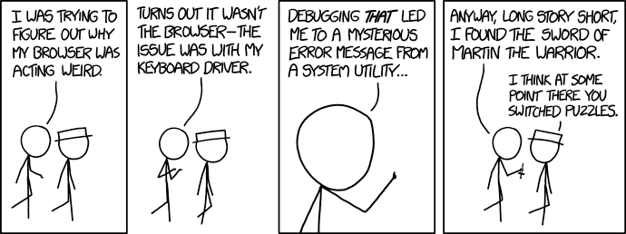
Signature:import pdb; pdb.set_trace() # or just breakpoint() in Python 3.7+ Example: - pdb (Python Debugger): built-in, terminal-based, works anywhere. Commands: n (next), s (step into), c (continue), p var (print). - ipdb: like pdb but with IPython features (tab completion, colors). Install: pip install ipdb. - breakpoint(): Python 3.7+ builtin that drops into pdb (replaces import pdb; pdb.set_trace()). - Switch to the VS Code debugger for call stacks, watches, and conditional breakpoints. - Debugging is like being a detective in a crime movie where you're also the culprit. Which debugging tool should you use?
- Quick variable check? →
print(f"{var=}") - See how state changes over time? → VS Code debugger with breakpoints
- Debugging via SSH/remote terminal? →
pdborbreakpoint() - Want persistent debug messages? →
loggingmodule (can toggle on/off)
VS Code debugger basics (scripts)¶
Summary: Set breakpoints, run under the debugger, and use call stack/watches to trace BMI bugs. Visual:
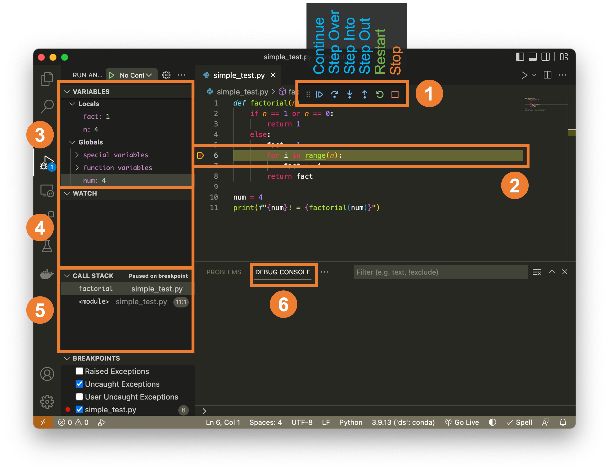
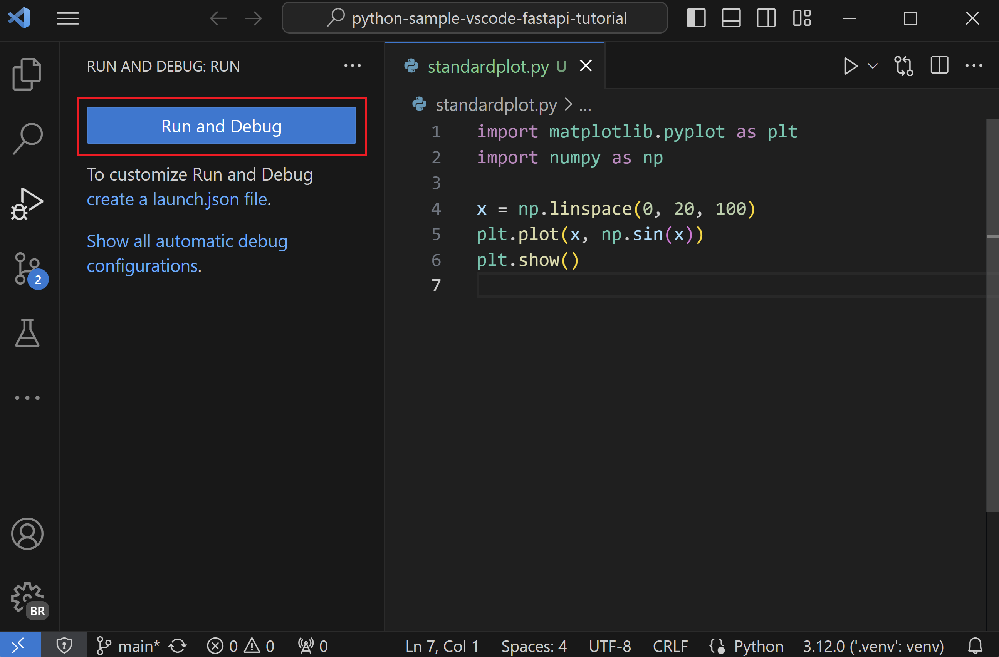
Signature:"request": "launch" entry in .vscode/launch.json Example: {
"version": "0.2.0",
"configurations": [{
"name": "Debug BMI",
"type": "python",
"request": "launch",
"program": "${workspaceFolder}/demo/vscode_debug_sample.py"
}]
}
row["bmi"] is None). Debugging notebooks in VS Code¶
Summary: Use the debug button per cell, set breakpoints inside cells, and restart kernels before Run All. Visual:
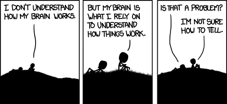
Signature:#%% cell debug blocks in Python files map to notebook-style debugging. Example: - In VS Code, use the debug icon beside a cell to enter a debug session for that cell. - Breakpoints work inside notebook cells; continue/step behaves like scripts. - Restart kernel + Run All after debugging to confirm clean state. Debugging checklist for messy data¶
Summary: Reproduce with tiny fixtures, check assumptions, add assertions/logging, and rerun until stable. Visual:
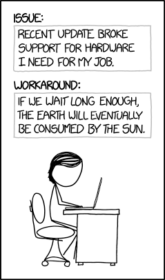
Signature:def reproduce_bug(input_path: Path) -> None Example: fixture = Path("demo/data/patient_intake_missing_height.csv")
try:
load_intake_data(fixture)
except Exception as err:
print("Reproduced:", err)
Demo (~90 min): Walk through a VS Code debug session¶
Summary: Step through the BMI script, fix the formula/typo/indexing bugs, and rerun to verify clean output. Visual:
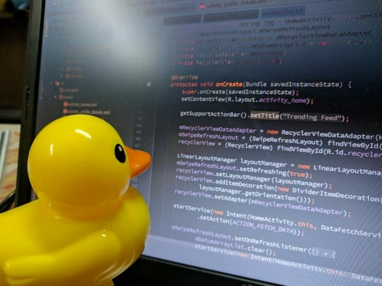
Signature:breakpoint() builtin for quick stops Example: - Open the vscode_debug_sample.py (adapted from lectures_25/02 BMI example). - Set a breakpoint inside a loop, run the debugger, inspect variables, and adjust a faulty condition. - Re-run the cell/notebook with Run All to confirm the fix and clean state. Assignment (auto-graded)¶
Summary: Auto-graded Classroom repo mirroring datasci_217 scaffold; prove logging/assertions and one VS Code debug walkthrough. Visual:
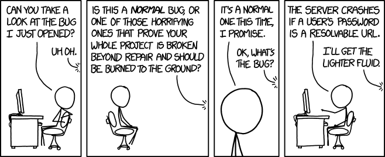
Signature:.github/tests/test_* executed by GitHub Actions Example: - Lightweight, auto-gradable via GitHub Actions (mirrors the datasci_217 layout with
.github/tests,assignment.ipynb+assignment.md,requirements.txt,data/, andoutput/folders). - Focus: add logging + assertions to a small notebook, plus one VS Code debug walkthrough.
- Submission: accept the Classroom repo, push changes, verify Actions pass; rubric is fully automated.
Resources¶
Summary: Where to dig deeper on tooling/debugging plus a comic to keep morale up. Visual:  Signature:
Signature: open("refs/instructions.md").read() Example:
- Deep dives: DS-217 Lecture 01 (tooling) and
lectures_25/02(debugging demos) plus the local./demoassets above. - References: Python
logging, VS Code debugging guide, and MkDocs notes inrefs/. - When in doubt, explain your code to a rubber duck. If it still doesn't make sense, the bug is in your assumptions.